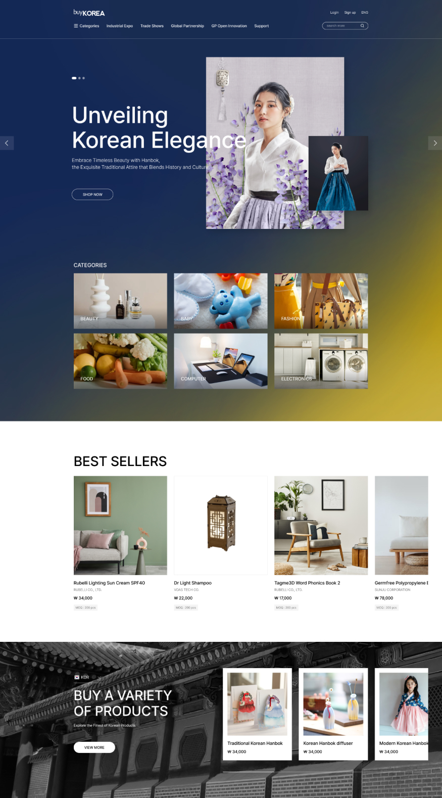

Project diary
바이코리아는 대한무역협회에서 국제무역을 하고있는 쇼핑몰인 만큼 국내, 해외 사용자들을 고려하여 작업해야만 했습니다.
시각적으로 상품들이 잘 보여지는건 물론이고 한국적인 디자인 컨셉과 이국적인 컨셉의 타입을 나누어 작업 하였습니다.
ASIS의 웹은 컨텐츠 구성과 디자인 컨셉이 없이 작업되어져서 이러한 단점들을 보완하고 변화하려고 노력하였습니다.
- Work period
- Participation page
- 2023. 04. 23 - 2023. 04. 28
- Main_A, Main_B, Detail, Seller, Mo
-
A_Type
한지, 전통적인 패턴, 아이콘, 오감색 컬러의 베리에이션을 통해 한국 전통적인 컨셉을 표현하려고 노력했습니다.
또한 가시성과 사용성을 높히기 위해 레이아웃구성이나 카테고리, 진행되고 있는 프로모션, 개인화 영역등을 디자인에 녹여냈습니다.
- 
-
B_Type
시원한 레이아웃 구성과 그라데이션을 이용한 과감한 비주얼을 사용하여 메인에 힘을 실어주고,
연관상품과 국가별 상품 등 연관성이 컨텐츠끼리 묶어서 사용자들이 서비스를 쉽게 이용 할 수 있게 작업되었습니다.